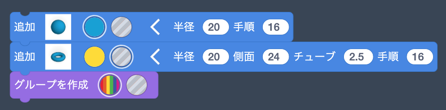

球を追加
トーラスを追加
グループを作成
トーラスでくり抜く
トーラスをx軸中心に90度回転させる
繰り返しブロックを使ってくり抜くトーラスの数を増やす
トーラスの太さを変える
「新しいオブジェクトを作成」ブロックを用いて「sphere」オブジェクトを作成，「spheres」オブジェクト内で複製．
三角関数を用いて真円状に配置
円の半径を拡大
「sphere」の解像度を落とす，円の拡大率を変数にする
複製する「sphere」オブジェクトの数を増やす
rをthetaによって変化させる
itr変数を追加
itr変数を値を変更，「sphere」オブジェクトのz座標をRandomブロックで変更
Randomブロックの値が一意に決まらないことを確認
繰り返しごとに変数randomにランダムの値が代入されるように変更
「sphere」オブジェクトを消して，全体をグループ化